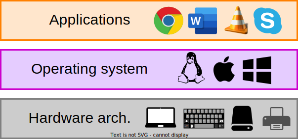
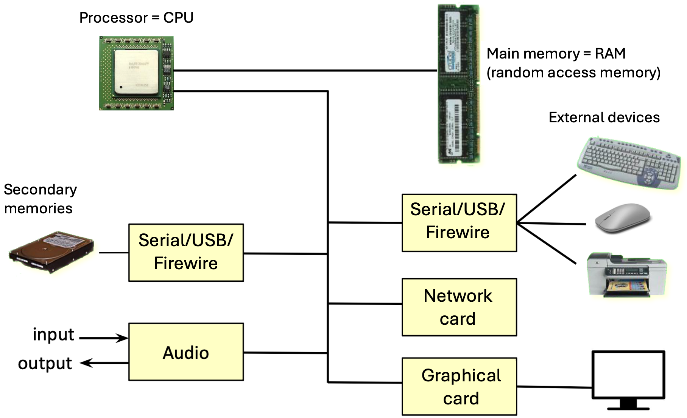

Computer Architecture
and Software Execution Process
Operating systems - OS
Bachelor in Artificial Intelligence, Data and Management Sciences
CentraleSupelec and ESSEC Business School - 2024/2025
CentraleSupelec and ESSEC Business School - 2024/2025

Layered organization


All these systems are built
on a single model
- a hardware architecture
- a set of devices
- an operating system
- a set of applications
Layered organization

The computer components

The computer components
-
What can a computer (processor) do?
- copy values between storage units
- perform logical/arithmetic operations between stored values
- move within the program, possibly conditionally
Formerly
ENIAC

- First fully electronic computer.
-
Programming was done directly
in machine language. - Only one program can run at a time.
-
The lack of an operating system forced
the programmer to load the program manually.
Formerly
IBM RAMAC 305
- The First hard disk computer (the IBM 350) was marketed in September 1956 by IBM.
-
It contained the following elements:
Processing Unit, printer, console, power supply, hard drive, and 5MB memory. - The Processing Unit is based on a magnetic drum where the program is stored.
- An operator programs using punched cards and writes the data into the drum.
Automate tasks
- How do we automate the operators and programmers tasks ?
- Write a computer program that:
- decides who does what and when.
- bridges software applications and hardware
Definition
“An operating system is a set of programs providing the interface between
hardware and users.”
hardware and users.”
- manages the hardware part.
- serves as a base for software/user applications
History/Types of OS
History/Types of OS
- Batch systems are based on two programs:
- the loader $\to$ loads the programs into the main memory from punch cards.
- the processing monitor $\to$ executes the tasks set one by one in place of the operator.
History/Types of OS
Use multiple components in parallel, which requires:
- Priority management (which process can use the resource)
- scheduling
-
Shared memory (manage information from multiple processes)
- addressing and memory
Example : MULTICS
History/Types of OS

History/Types of OS
- Deadline management $\to$ response time constraint
- processes must respond quickly
- Development of microcomputers
-
Appearance of graphical user interfaces
- Xerox $\rightarrow$ Apple Macintosh 1984, Windows 95, Linux 1991
History/Types of OS
- Computers communicate to exchange data!
- Arpanet (1967) designed by DARPA
- E-mail (1972) designed by Ray Tomlinsonn
- TCP/IP(1972)
- Client-server $\rightarrow$ NFS - Network File System (Sun, 1984)
- Arpanet opened late 80s $\rightarrow$ Web early 90s (CERN , Tim Berners-Lee)
History/Types of OS

- Mobile devices (or handheld computers) have existed since the 80s.
- 1986 : PDA $\rightarrow$ PalmOS
- 2007 : smartphones $\rightarrow$ android OS
- 2007 : iPhone $\rightarrow$ iOS
Operating system roles
- The kernel-hardware interface supports the management and sharing of the computer resources.
- The kernel-user interface provides an easier-to-use and more user-friendly virtual machine.
- The kernel provides several important functionalities.

The kernel-hardware interface
- Manage access and sharing of hardware resources.
- processor
- memory
- input/output devices
- ...
- This management must ensure:
- equity of access to hardware
- protecting access to hardware
- consistency of hardware states
The kernel-user interface
- Provide an interface between hardware and software applications.
- a simplified and unified interface.
- A more straightforward and user-friendly virtual machine is presented above the physical machine.
- Create the illusion of real physical resources (processor, memory, peripheral...).

Command Interpreter (shell)
-
Command language
a set of commands provided to the user
to interact with the operating system. -
Command Interpreter
executes user commands by calling
a system routine
(function provided by the kernel).

Command Interpreter (shell)
- Each operating system has its own command language.
- MSDOS/Unix $\to$ console + keyboard
- Mac/Windows $\to$ mouse + keyboard
- iOS/Android $\to$ buttons + touch screen


Command Interpreter (shell)
Question
Can you give me some functions provided by your OS
that help you to use your computer system?
The Kernel of an operating system
-
Process management
- scheduling, synchronization, ...
-
Memory management
- allocation, space management, ...
-
Secondary storage management
- file system, ...
-
Input/output management (I/O)
- controllers, drivers, ...
- Security management

General Structure of an OS
- System Calls $\to$ functions allowing user applications to request kernel services.
- Kernel $\to$ a set of programs providing general services.
- Drivers $\to$ programs allowing the kernel to interact with external devices.
- Interruptions $\to$ events produced by the hardware and triggering kernel services.
- Exceptions $\to$ events produced by the processor and triggering kernel services.
Loading an OS
-
The OS is the first executed program when the computer is turned ON
after booting (boot). - The boot (bootstrap) process defines the successive stages of startup.
The boot steps
- the POST test - Power On Self Test
- after a start or a reset operation, the processor loads the first instructions located at the address FFFF0 from the BIOS ROM memory.
- instructions for triggering a BIOS program that initializes and tests hardware functions.
- loading the MBR - Master Boot Record
- if the POST test succeeds, it will consult RAM CMOS to identify the system disk whose first sector is called MBR.
- the MBR code tests the partition table to load the partition
containing the boot sector with IPL - Initial Program Load.
- the IPL loads the OS or bootmanager into RAM.
- the OS is launched